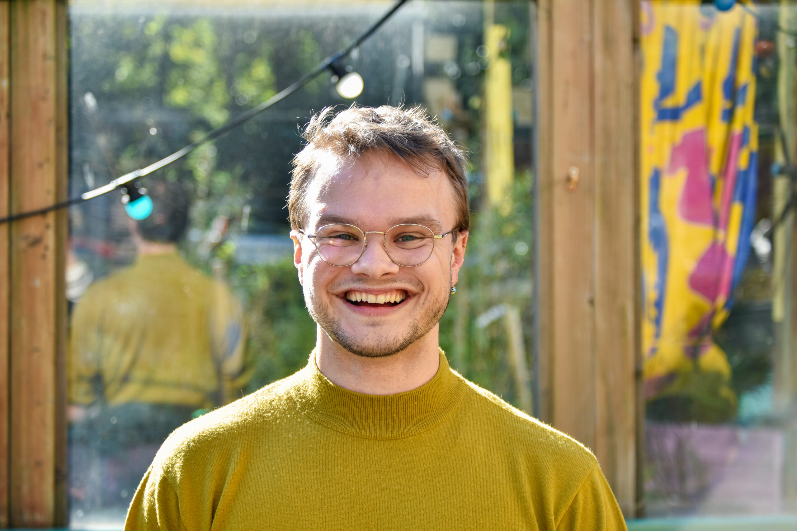

Nerd 6: Marieke & Pim
Digitale Toegankelijkheid
Samenvatting
Mariek en Pim van het bedrijf Digitaal Toegankelijk bezochten deze week de Weekly Nerd sessie om te spreken over het belang van digitale toegankelijkheid. Hun bedrijf zet zich in om ervoor te zorgen dat iedereen, inclusief mensen met een handicap, websites kan gebruiken. Ze introduceerden de Web Content Accessibility Guidelines (WCAG) en bespraken de vier hoofdpijlers.
-
Toegankelijk
- Perceivable Informatie en componenten moeten zo worden gepresenteerd dat gebruikers ze kunnen waarnemen.
- Operable Gebruikers moeten in staat zijn om de interface te bedienen.
- Understandable Informatie en de werking van de gebruikersinterface moeten begrijpelijk zijn.
- Robust Inhoud moet robuust genoeg zijn om betrouwbaar te worden geïnterpreteerd door een breed scala aan gebruikers, inclusief technologieën voor hulpbehoevenden.
-
"Big 4" toegankelijkheidsprincipes
- Audio Control Geluid dat langer dan drie seconden duurt moet pauzeerbaar zijn.
- No Keyboard Trap Gebruikers mogen niet vast komen te zitten bij navigatie met het toetsenbord.
- Pause, Stop, Hide Bewegende elementen moeten binnen vijf seconden gepauzeerd kunnen worden.
- Three Flashes or Below Threshold Geen enkel element mag drie keer of meer per seconde flitsen.
-
Belangrijke vragen die je jezelf moet stellen
- Kan de content door iedereen waargenomen worden?
- Kan de content door iedereen bereikt en gebruikt worden?
- Kan deze content door iedereen begrepen worden?
- Is de techniek achter mijn digitale product semantisch correct opgebouwd?
- Ze benadrukten ook het belang van het testen van je site met een screenreader, navigeren met een toetsenbord en testen met je doelgroep.
Reflectie
De lezing van Mariek en Pim was zeer interessant en relevant, vooral omdat toegankelijkheid een belangrijk onderwerp is binnen CMD. Hoewel de presentatie af en toe aanvoelde als een promotie voor hun bedrijf, bevatte deze veel waardevolle en praktische tips voor het verbeteren van de toegankelijkheid van websites.
Wat ik vooral waardeerde, was de nadruk op simpele en toepasbare tips. De "Big 4" principes en de vragen die je jezelf moet stellen, waren bijzonder nuttig en gaven me concrete handvatten om mijn eigen projecten toegankelijker te maken. Het was ook inspirerend om te horen hoe belangrijk het is om je werk te testen met tools zoals screenreaders en toetsenbordnavigatie, evenals het betrekken van de doelgroep bij het testproces.
Conclusie
De presentatie van Mariek en Pim was een waardevolle sessie die praktische inzichten bood in het verbeteren van digitale toegankelijkheid. Hun tips en adviezen waren direct toepasbaar en hebben mijn bewustzijn vergroot over hoe ik mijn projecten inclusiever kan maken. Ik beoordeel deze Weekly Nerd sessie met een rating van 7,5/10.